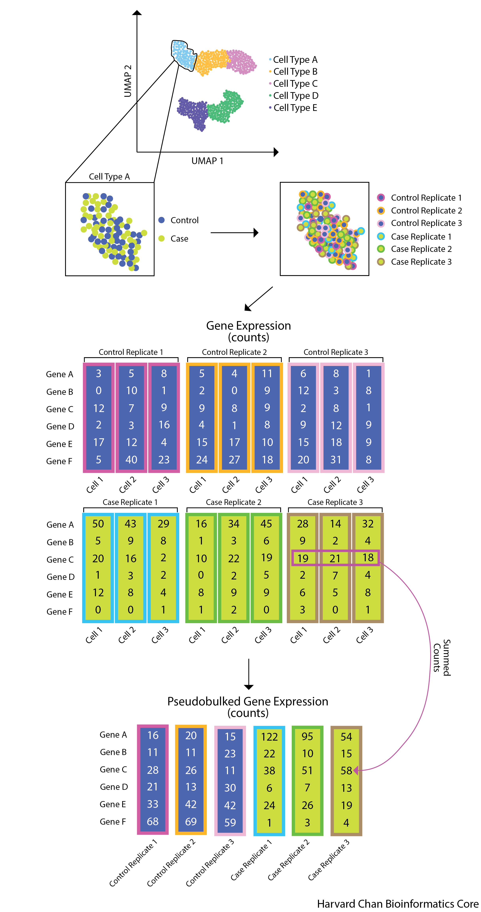
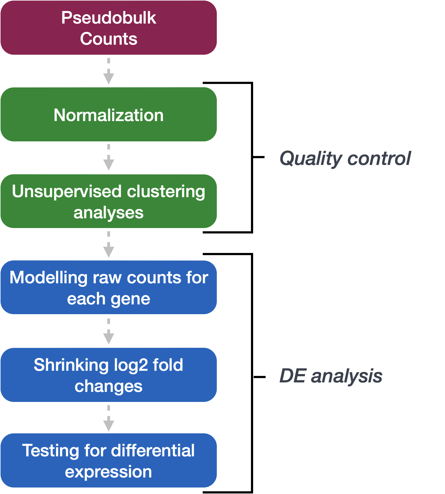
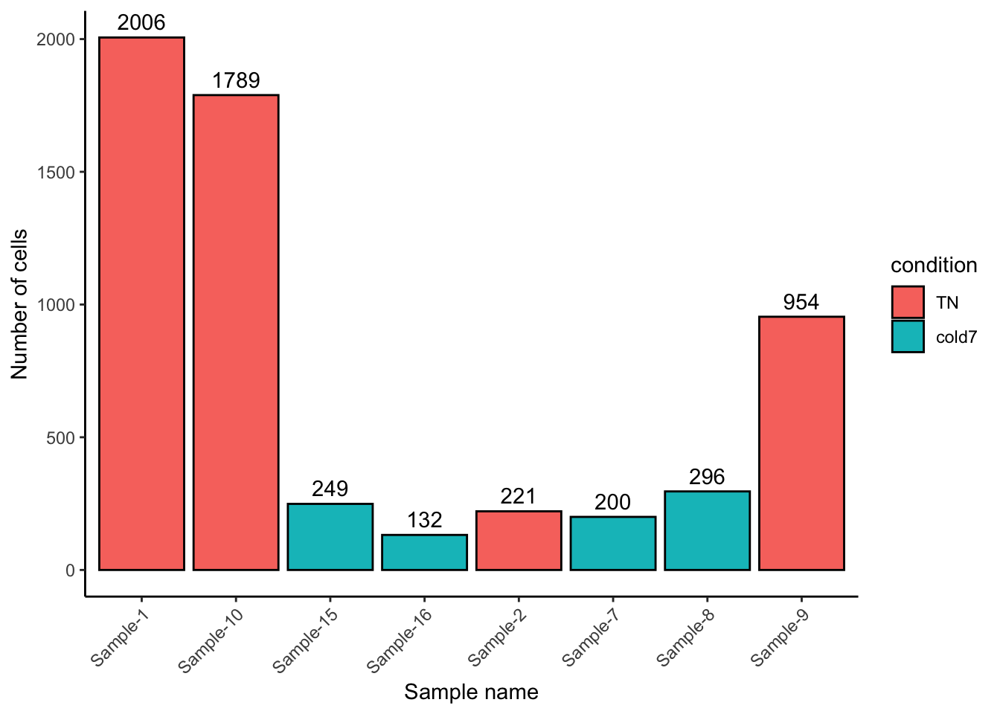

# Single-cell RNA-seq analysis - Pseudobulk DE analysis with DESeq2Set-up DESeq2 analysis
Approximate time: 40 minutes
Learning Objectives:
- Prepare single-cell RNA-seq raw count data for pseudobulk differential expression analysis
- Create a DESeq2 object for differential expression analysis on a specific cell type cluster
Pseudobulk differential expression analysis
In the previous lesson we demonstrated how to perform a differential expression analysis using the FindMarkers() function in Seurat. The major limitation of this approach is that it treats each individual cell as a replicate, which inflates the p-value, resulting in many false positives. In this lesson we introduce you to the pseudobulk approach, in which cells belonging to a cluster are aggregated within each sample to create a gene by sample count matrix. This count matrix resembles the input we use for bulk RNA-seq, and we use a similar workflow to identify differentially expressed genes.

Forming pseudobulk samples is important to perform accurate differential expression analysis. Cells from the same sample/individual are more similar to each other than to cells from another individual. This means treating each cell as an independent sample leads to underestimation of the variance and misleadingly small p-values. Working on the level of pseudobulk ensures reliable statistical tests because the samples correspond to the units of replication.
Using a pseudobulk approach involves the following steps:
- Subsetting to the cells for the cell type(s) of interest to perform the DE analysis;
- Extracting the raw counts after QC filtering of cells to be used for the DE analysis;
- Aggregating the counts and metadata to the sample level;
- Performing the DE analysis (you need at least two biological replicates per condition to perform the analysis, but more replicates are recommended).
Setting up
Let’s begin by opening a new Rscript file, and include a commentheader line:
Save the Rscript as DE_analysis_scrnaseq.R.
Load libraries
Next, let’s load the libraries that we will be using for the analysis:
# Load libraries
library(Seurat)
library(tidyverse)
library(DESeq2)
library(pheatmap)
library(EnhancedVolcano)
library(RColorBrewer)
library(cowplot)
library(dplyr)
library(ggrepel)Create metadata
We will want to create a dataframe with all of the sample-level metadata, this will be used during the aggregation step but also later with differential expression analysis.
Note
Other relevant metadata for a pseudobulk differential expression analysis include information about the individuals that will be contrasted (age, sex, clinical presentation, etc.). The more information you can collect about your study samples, the better!_
meta_columns <- c("sample", "condition")
meta <- seurat@meta.data %>%
select(meta_columns) %>%
unique() %>%
remove_rownames()
meta sample condition
1 Sample_1 TN
2 Sample_2 TN
3 Sample_9 TN
4 Sample_10 TN
5 Sample_3 RT
6 Sample_4 RT
7 Sample_11 RT
8 Sample_12 RT
9 Sample_6 cold2
10 Sample_13 cold2
11 Sample_14 cold2
12 Sample_7 cold7
13 Sample_8 cold7
14 Sample_15 cold7
15 Sample_16 cold7Aggregate counts for pseudobulk analysis
Now, before we transform our single-cell level dataset into one sample-level dataset per cell type (cluster), there are a few data wrangling steps involved. We know that we want to aggregate cells of a particular celltype and that we want to collapse them down by sample.
To aggregate the counts, we will use the AggregateExpression() function from Seurat. It will take as input a Seurat object, and return summed counts (“pseudobulk”) for each identity class. The default is to return a matrix with genes as rows, and identity classes as columns. We have set return.seurat to TRUE, which means rather than a matrix we will get an object of class Seurat. We have also specified which factors to aggregate on, using the group.by argument.
bulk <- AggregateExpression(
seurat,
return.seurat = TRUE,
assays = "RNA",
group.by = c("celltype", "sample", "condition")
)
bulkAn object of class Seurat
19771 features across 133 samples within 1 assay
Active assay: RNA (19771 features, 0 variable features)
3 layers present: counts, data, scale.dataNow our Seurat object has ‘cells’ that correspond to aggregated counts. We will see that the samples have the name “{celltype}_{sample}_{condition}” to show that we are grouping together counts based on sample, celltype, and condition. The metadata columns that were used as input are included in this new Seurat object as well.
# each 'cell' is a sample-condition-celltype pseudobulk profile
tail(Cells(bulk))[1] "VSM-AP_Sample-3_RT" "VSM-AP_Sample-4_RT" "VSM-AP_Sample-6_cold2"
[4] "VSM-AP_Sample-7_cold7" "VSM-AP_Sample-8_cold7" "VSM-AP_Sample-9_TN" Now would be the time to add to your metadata any other information you have on the samples. For example, adding the number of cells we aggregated on is useful information to include.
# Number of cells by sample and celltype
n_cells <- seurat@meta.data %>%
dplyr::count(sample, celltype) %>%
rename("n"="n_cells")
n_cells$sample <- str_replace(n_cells$sample, "_", "-")
meta_bulk <- left_join(bulk@meta.data, n_cells)
rownames(meta_bulk) <- meta_bulk$orig.ident
bulk@meta.data <- meta_bulk
# Turn condition into a factor
bulk$condition <- factor(bulk$condition, levels=c("TN", "RT", "cold2", "cold7"))
bulk@meta.data %>% head() orig.ident celltype sample condition
Adipo_Sample-1_TN Adipo_Sample-1_TN Adipo Sample-1 TN
Adipo_Sample-11_RT Adipo_Sample-11_RT Adipo Sample-11 RT
Adipo_Sample-12_RT Adipo_Sample-12_RT Adipo Sample-12 RT
Adipo_Sample-13_cold2 Adipo_Sample-13_cold2 Adipo Sample-13 cold2
Adipo_Sample-14_cold2 Adipo_Sample-14_cold2 Adipo Sample-14 cold2
Adipo_Sample-15_cold7 Adipo_Sample-15_cold7 Adipo Sample-15 cold7
n_cells
Adipo_Sample-1_TN 5
Adipo_Sample-11_RT 7
Adipo_Sample-12_RT 43
Adipo_Sample-13_cold2 28
Adipo_Sample-14_cold2 491
Adipo_Sample-15_cold7 15The output of this aggregation is a sparse matrix and, when we take a quick look, we can see that it is a gene by celltype-sample matrix.
bulk[["RNA"]]$counts[1:5, 1:5]5 x 5 sparse Matrix of class "dgCMatrix"
Adipo_Sample-1_TN Adipo_Sample-11_RT Adipo_Sample-12_RT
Xkr4 1 . .
Gm1992 . . .
Rp1 . . .
Sox17 . . .
Mrpl15 5 23 106
Adipo_Sample-13_cold2 Adipo_Sample-14_cold2
Xkr4 . .
Gm1992 . .
Rp1 . .
Sox17 . .
Mrpl15 135 2037Click here for alternative code for aggregating counts for multiple celltypes
Note that this code uses a for loop. This will first subset out cells by celltype and then aggregate, creating a list of pseudobulked Seurat objects. First, we create a vector of unique celltypes in our data so that we can iterate over each one of them.
celltypes <- sort(unique(seurat@meta.data[["celltype"]])) celltypes [1] "Adipo" "AP" "EC" "ECAP" "Lymph" "Pericyte" "Schwann" [8] "VSM" "VSM-AP"
Next, we want to store the aggregated, pseudobulked expression for each celltype as a list of Seurat objects. Therefore we are going to use the same steps we ran above with the AggregateExpression() function and adding the number of cells in each group as a metadata column.
pb_list <- list()
for (ct in celltypes) {
# Subset cells to one celltype
seurat_ct <- subset(seurat, subset=(celltype == ct))
# Aggregate to get pseudobulk
bulk_ct <- AggregateExpression(
seurat_ct,
return.seurat = T,
assays = "RNA",
group.by = c("celltype", "sample", "condition")
)
# Add number of cells per sample
n_cells <- seurat_ct@meta.data %>%
dplyr::count(sample, celltype) %>%
rename("n"="n_cells")
n_cells$sample <- str_replace(n_cells$sample, "_", "-")
meta_bulk_ct <- left_join(bulk_ct@meta.data, n_cells)
rownames(meta_bulk_ct) <- meta_bulk_ct$orig.ident
bulk_ct@meta.data <- meta_bulk_ct
pb_list[[ct]] <- bulk_ct
}
Differential gene expression with DESeq2
We will be using DESeq2 for the pseudobulk DE analysis, and the analysis steps with DESeq2 are shown in the flowchart below in green and blue. DESeq2 first normalizes the count data to account for differences in library sizes and RNA composition between samples. Then, we will use the normalized counts to make some plots for QC at the gene and sample level. The final step is to use the appropriate functions from the DESeq2 package to perform the differential expression analysis. We will go into each of these steps briefly, but additional details and helpful suggestions regarding DESeq2 can be found in our materials detailing the workflow for bulk RNA-seq analysis, as well as in the DESeq2 vignette.

Creating a DESeq2 object
From the pseudobulk Seurat object, we can extract the information required as the input to DESeq2. First, we need to decide which cell type we wish to focus on, and then retrieve the corresponding data from the object. We are going to look for differntially expressed genes between the TN and cold7 condition for the vascular smooth muscle (VSM) cells.
We use the subset() function to get the data we need:
bulk_vsm <- subset(bulk, subset= (celltype == "VSM") &
(condition %in% c("TN", "cold7")))
bulk_vsmAn object of class Seurat
19771 features across 8 samples within 1 assay
Active assay: RNA (19771 features, 0 variable features)
3 layers present: counts, data, scale.dataNumber of cells
Before moving on to a pseudobulk DGE analysis, it is important to identify how many cells we aggregated for each sample. We need to make sure that we have enough cells per sample after subsetting to one celltype. We can see that with the exception of one sample, the TN group has many cells and the cold7 samples have much fewer cells.
ggplot(bulk_vsm@meta.data, aes(x=sample, y=n_cells, fill=condition)) +
geom_bar(stat="identity", color="black") +
theme_classic() +
theme(axis.text.x = element_text(angle = 45, vjust = 1, hjust = 1)) +
labs(x="Sample name", y="Number of cells") +
geom_text(aes(label=n_cells), vjust=-0.5)
Exercise
Another cell type in this dataset that was particularly interesting to the authors were the Pdgfr α+ adipose progentior cells (APCs).
- Subset the
bulkobject to isolate only adipose progenitor cells for the TN and cold7 conditions. Assign it to variable calledbulk_APC.
Hint: You may need to review celltypes to determine what this cell type is called in our data. You can find unique celltypes with the code:
celltypes <- sort(unique(seurat@meta.data[["celltype"]]))Reminder: The abbreviations for the cell types can be found in the project set-up lesson.
- Plot the cell number distribution across samples. How do the numbers compare to VSM cells?
Now we can create our DESeq2 object to prepare to run the DE analysis. We need to include the counts, metadata, and design formula for our comparison of interest. In the design formula we should also include any other columns in the metadata for which we want to regress out the variation (batch, sex, age, etc.). For this dataset, we only have our comparison of interest, which is stored as the condition in our metadata data frame.
More information about the DESeq2 workflow and design formulas can be found in our DESeq2 materials.
# Get count matrix
cluster_counts <- FetchData(bulk_vsm, layer="counts", vars=rownames(bulk_vsm))
# Create DESeq2 object
# transpose it to get genes as rows
dds <- DESeqDataSetFromMatrix(t(cluster_counts),
colData = bulk_vsm@meta.data,
design = ~ condition)
ddsclass: DESeqDataSet
dim: 19771 8
metadata(1): version
assays(1): counts
rownames(19771): Xkr4 Gm1992 ... CAAA01118383.1 CAAA01147332.1
rowData names(0):
colnames(8): VSM_Sample-1_TN VSM_Sample-10_TN ... VSM_Sample-8_cold7
VSM_Sample-9_TN
colData names(5): orig.ident celltype sample condition n_cellsNow that the DESeq2 object is created, we are ready to continue with our analysis!
Exercises
- Using the code below, create a DESeq2 object for the Pdgfr α+ APCs data. There is nothing to submit for this exercise, but please run the code as you will need
dds_APCfor future exercises.
# Get count matrix
APC_counts <- FetchData(bulk_APC, layer="counts", vars=rownames(bulk_APC))
# Create DESeq2 object
# transpose it to get genes as rows
dds_APC <- DESeqDataSetFromMatrix(t(APC_counts),
colData = bulk_APC@meta.data,
design = ~ condition)
dds_APC